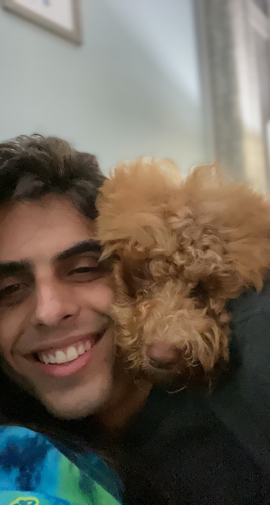

Welcome to my website. My name is Chris and here you'll find projects I work on over time
that I decide to document. I love learning new things and creating my own things. I've done all sorts of projects
over time primarily either woodworking or technical with hardware and software. I created a tv tray with a marbled
looking wood top using stains, a tree platform you might call it(that survived another tree falling on it), and I
assembled a 3-D printer, my first computer, and a moped. Most recently I've been focusing on the software
development side of things and created a twitter bot. Previously I've created games like minesweeper, very basic
android apps, or websites. My current project is this website, primarily created to host data pulled from a MySQL
database that the twitter bot outputs data to.